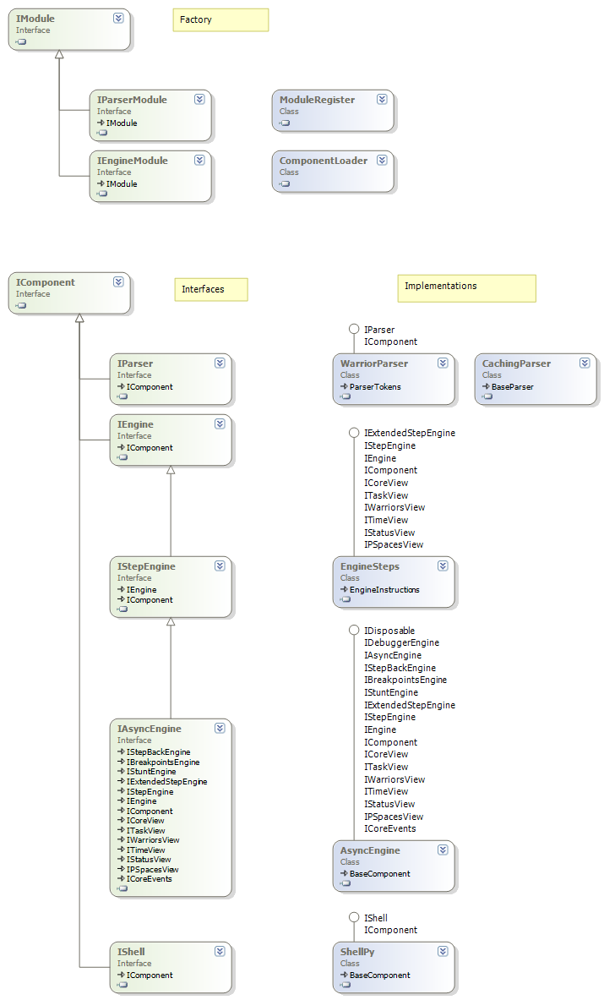

nMars Components
Overview
- Modularity infrastructure is defined in namespace nMars.RedCode.Modules of RedCode library
- Modules (or plug-ins) are automaticaly registered in class ModuleRegister, this class is also factory for component instances.
- Modules are idetified by name of namespace. When there are more implementations of same component inteface in same module, it is named with sufix. Examples are nMars.Engine and nMars.Engine-StepBack.
- Registration of module is done thru static constructor of Module class in each module assembly.
- Instantiation could be done by calling facory methods of class
ModuleRegister
or by configuring and using class ComponentLoader. This class is serialized to XML and used as configuration for IDE solution.
Interfaces & implementations
Below are most important interfaces and implementations.
